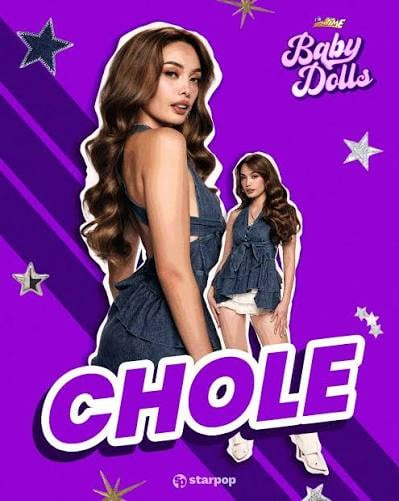

Personal Information
Full Name: Abigail Nichole “Chole” Florendo
Group: Baby Dolls
Profession: Performer and dancer
Previous Segment: Girl on Fire
Nationality: Filipino
Birthday: November 28, 2002
Hometown: Taytay, Rizal
About Her: Chole is one of the members of Baby Dolls, the girl group introduced through the ABS-CBN noontime variety show It's Showtime. She was associated with the show's Girl on Fire segment before joining the group.